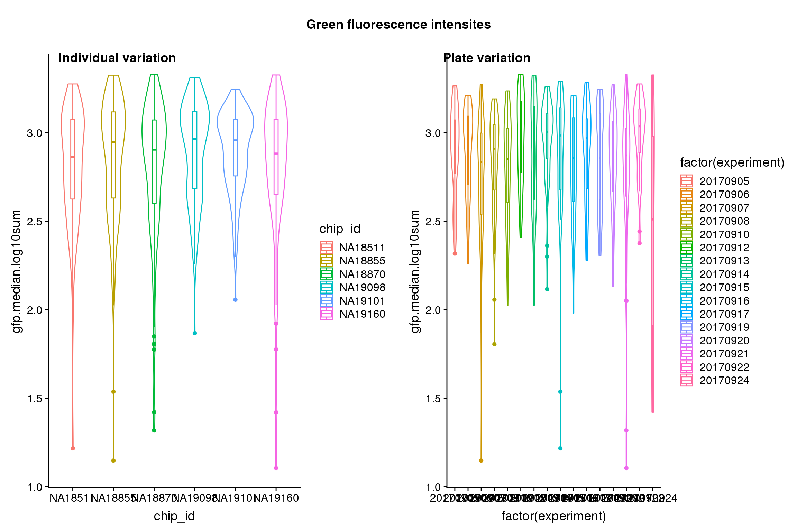
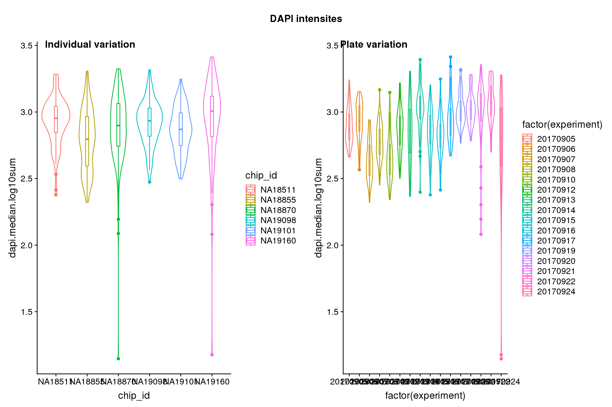
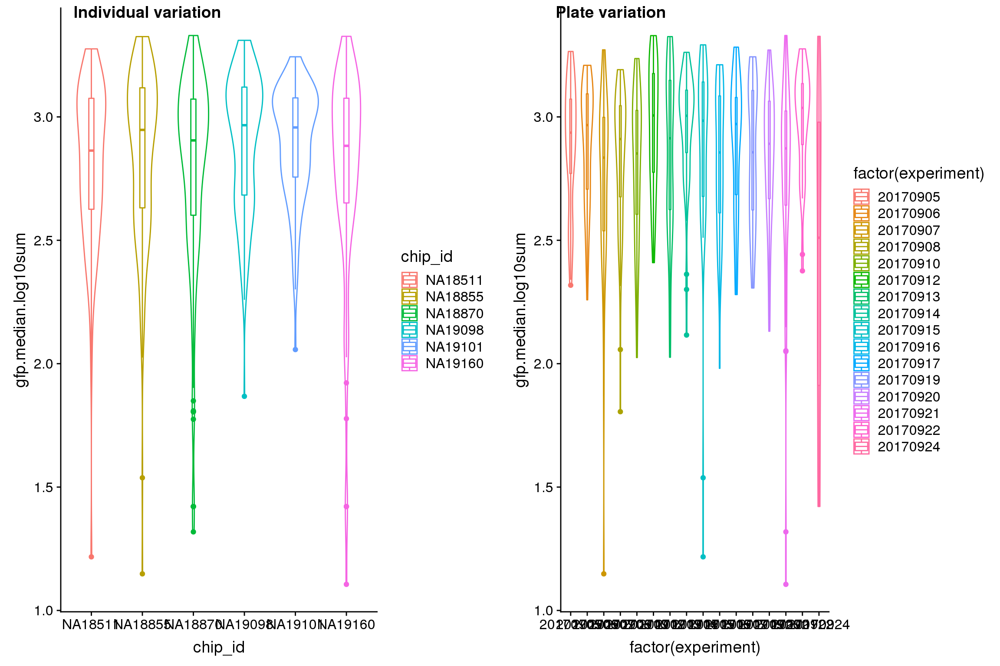
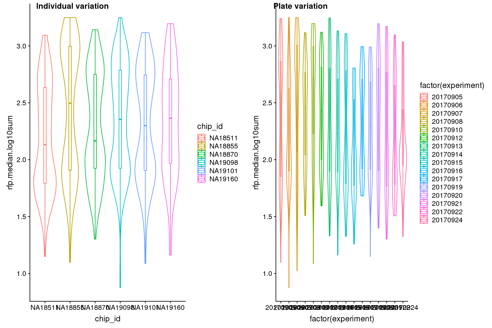
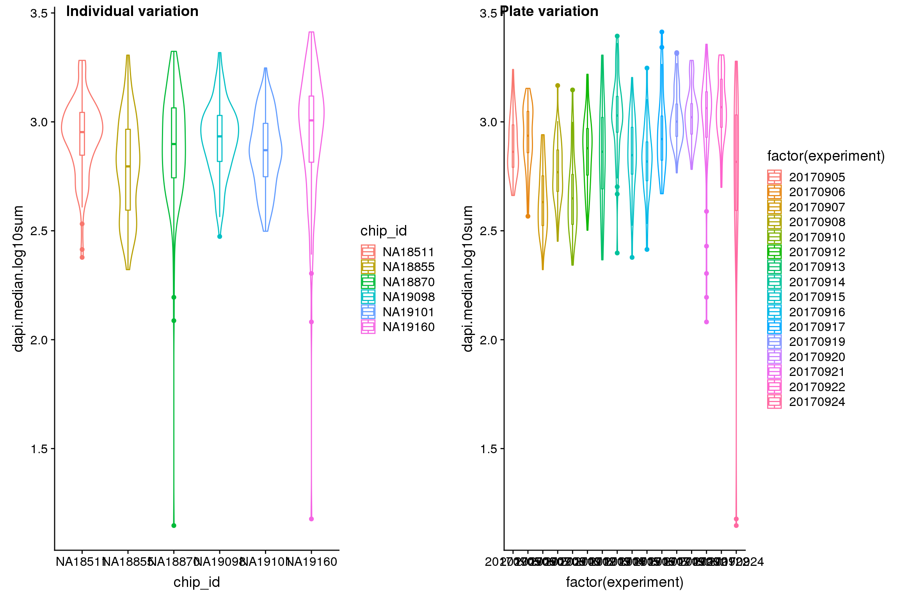
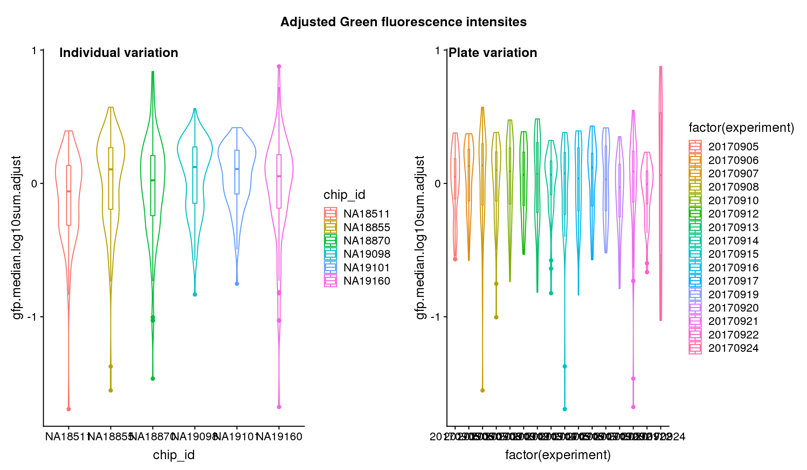
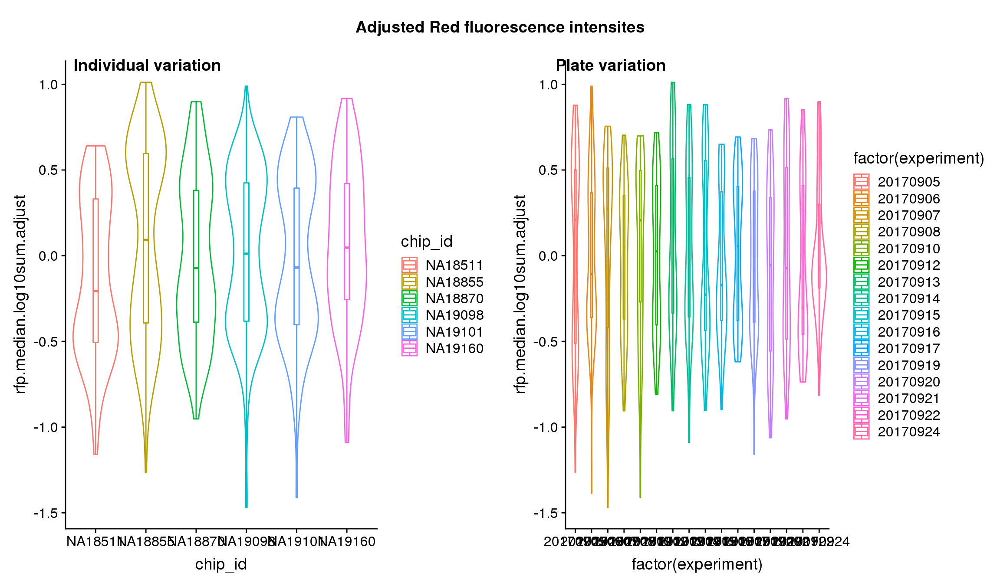
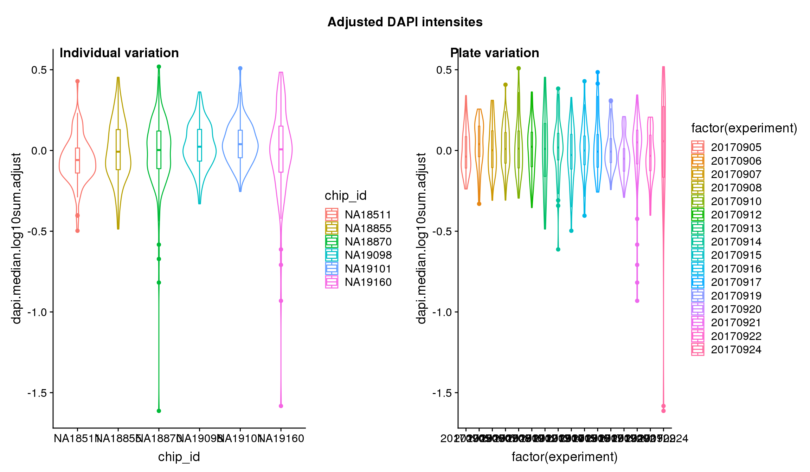
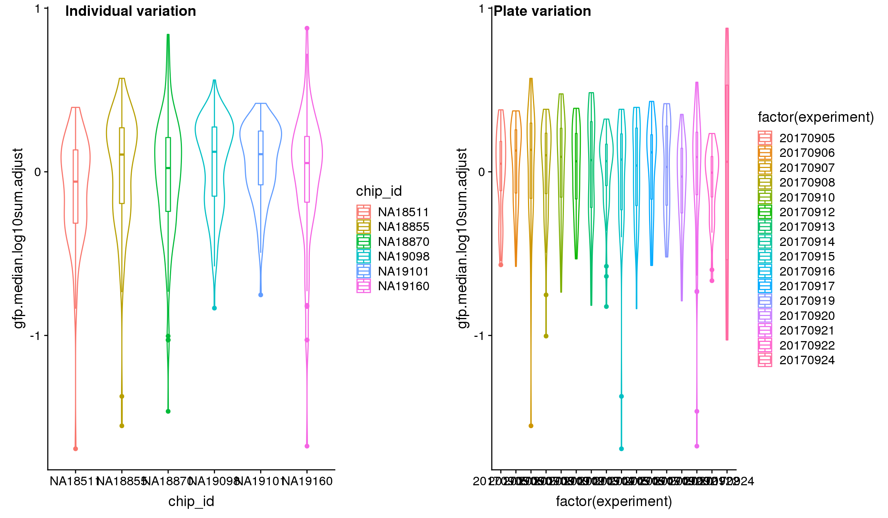
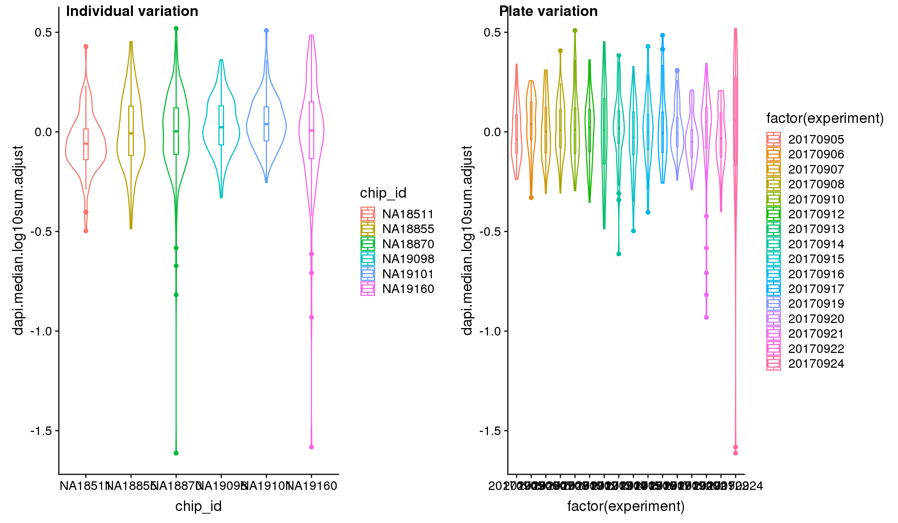

Normalize intensities across C1 batches
Joyce Hsiao
Last updated: 2020-03-14
Checks: 7 0
Knit directory: peco-paper/
This reproducible R Markdown analysis was created with workflowr (version 1.6.0). The Checks tab describes the reproducibility checks that were applied when the results were created. The Past versions tab lists the development history.
Great! Since the R Markdown file has been committed to the Git repository, you know the exact version of the code that produced these results.
Great job! The global environment was empty. Objects defined in the global environment can affect the analysis in your R Markdown file in unknown ways. For reproduciblity it’s best to always run the code in an empty environment.
The command set.seed(20190814) was run prior to running the code in the R Markdown file. Setting a seed ensures that any results that rely on randomness, e.g. subsampling or permutations, are reproducible.
Great job! Recording the operating system, R version, and package versions is critical for reproducibility.
Nice! There were no cached chunks for this analysis, so you can be confident that you successfully produced the results during this run.
Great job! Using relative paths to the files within your workflowr project makes it easier to run your code on other machines.
Great! You are using Git for version control. Tracking code development and connecting the code version to the results is critical for reproducibility. The version displayed above was the version of the Git repository at the time these results were generated.
Note that you need to be careful to ensure that all relevant files for the analysis have been committed to Git prior to generating the results (you can use wflow_publish or wflow_git_commit). workflowr only checks the R Markdown file, but you know if there are other scripts or data files that it depends on. Below is the status of the Git repository when the results were generated:
Ignored files:
Ignored: .Rhistory
Ignored: .Rproj.user/
Untracked files:
Untracked: code/note_wo_w_pca.R
Untracked: code/run_seurat.R
Untracked: data/intensity.rds
Untracked: data/log2cpm.quant.rds
Untracked: data/ourdata_phase_cyclone.rds
Untracked: data/ourdata_phase_seurat.rds
Unstaged changes:
Modified: code/suppfig06.R
Note that any generated files, e.g. HTML, png, CSS, etc., are not included in this status report because it is ok for generated content to have uncommitted changes.
These are the previous versions of the R Markdown and HTML files. If you’ve configured a remote Git repository (see ?wflow_git_remote), click on the hyperlinks in the table below to view them.
| File | Version | Author | Date | Message |
|---|---|---|---|---|
| Rmd | 909764a | jhsiao999 | 2020-03-14 | add anova results post batch correction |
| html | 72c318c | jhsiao999 | 2020-01-12 | Build site. |
| Rmd | 060d627 | jhsiao999 | 2020-01-12 | correct for C1 batch effect in fluorescence intensities |
Introduction/summary
We fit the following model to estimate individual effect \(\gamma_i\) and C1 plate effect \(\beta_j\) in fluorescence intensities. In notation,
\[ y_{ijk} = \mu + \tau_i + \beta_j + \epsilon_{ijk} \] where \(i = 1,2,..., I\) and \(j = 1,2,..., J\). The parameters are estimated under sum-to-zero constraints \(\sum \tau_i = 0\) and \(\sum \beta_j = 0\).
Note that in this model 1) not all \(y_{ij.}\) exists due to the incompleteness of the design, 2) the effects of individual and block are nonorthogonal, 3) the effects are additive due to the block design.
We found significant C1 plate effect in fluorescence intensities and corrected for this effect in GFP, RFP and DAPI channels. The corrected estimates are computed as
\[ \hat{y}_{ijk} = y_{ijk} - \hat{\beta}_j \] for all channels.
Data and packages
library(data.table)
library(dplyr)
library(ggplot2)
library(cowplot)
library(RColorBrewer)
library(scales)
library(car)
library(lsmeans)
library(SingleCellExperiment)Read in filtered data.
sce <- readRDS(file="data/sce-final.rds")
cdata <- data.frame(colData(sce))
rdata <- data.frame(rowData(sce))Estimate source of variation
Statistical tests show that for GFP, there’s significant plate effect (corresponds to experiment variable, P-value < 2E-16) but not significant individual effect (corresponds to chip_id varialbe).
lm.rfp <- lm(rfp.median.log10sum~factor(chip_id)+factor(experiment),
data = cdata)
lm.gfp <- lm(gfp.median.log10sum~factor(chip_id)+factor(experiment),
data = cdata)
lm.dapi <- lm(dapi.median.log10sum~factor(chip_id)+factor(experiment),
data = cdata)
aov.lm.rfp <- Anova(lm.rfp, type = "III")
aov.lm.gfp <- Anova(lm.gfp, type = "III")
aov.lm.dapi <- Anova(lm.dapi, type = "III")
aov.lm.rfpAnova Table (Type III tests)
Response: rfp.median.log10sum
Sum Sq Df F value Pr(>F)
(Intercept) 134.171 1 572.0156 < 2.2e-16 ***
factor(chip_id) 2.446 5 2.0860 0.0650143 .
factor(experiment) 9.396 15 2.6706 0.0005482 ***
Residuals 203.362 867
---
Signif. codes: 0 '***' 0.001 '**' 0.01 '*' 0.05 '.' 0.1 ' ' 1aov.lm.gfpAnova Table (Type III tests)
Response: gfp.median.log10sum
Sum Sq Df F value Pr(>F)
(Intercept) 209.745 1 2011.7679 < 2e-16 ***
factor(chip_id) 1.285 5 2.4657 0.03136 *
factor(experiment) 12.352 15 7.8984 < 2e-16 ***
Residuals 90.393 867
---
Signif. codes: 0 '***' 0.001 '**' 0.01 '*' 0.05 '.' 0.1 ' ' 1aov.lm.dapiAnova Table (Type III tests)
Response: dapi.median.log10sum
Sum Sq Df F value Pr(>F)
(Intercept) 219.276 1 6110.5970 < 2e-16 ***
factor(chip_id) 0.424 5 2.3621 0.03836 *
factor(experiment) 11.582 15 21.5164 < 2e-16 ***
Residuals 31.112 867
---
Signif. codes: 0 '***' 0.001 '**' 0.01 '*' 0.05 '.' 0.1 ' ' 1Visualize indivdual and plate variation

| Version | Author | Date |
|---|---|---|
| 72c318c | jhsiao999 | 2020-01-12 |

| Version | Author | Date |
|---|---|---|
| 72c318c | jhsiao999 | 2020-01-12 |

| Version | Author | Date |
|---|---|---|
| 72c318c | jhsiao999 | 2020-01-12 |

| Version | Author | Date |
|---|---|---|
| 72c318c | jhsiao999 | 2020-01-12 |

| Version | Author | Date |
|---|---|---|
| 72c318c | jhsiao999 | 2020-01-12 |

| Version | Author | Date |
|---|---|---|
| 72c318c | jhsiao999 | 2020-01-12 |
Estimate plate
Contrast test to estimate the effect of C1 plate.
# make contrast matrix for plates
# each plate is compared to the average
n_plates <- uniqueN(cdata$experiment)
contrast_plates <- matrix(-1, nrow=n_plates, ncol=n_plates)
diag(contrast_plates) <- n_plates-1
gfp.plates <- summary(lsmeans(lm.gfp, specs="experiment", contrast=contrast_plates))
rfp.plates <- summary(lsmeans(lm.rfp, specs="experiment", contrast=contrast_plates))
dapi.plates <- summary(lsmeans(lm.dapi, specs="experiment", contrast=contrast_plates))Substract plate effect from the raw estimates.
## RFP
cdata$rfp.median.log10sum.adjust <- cdata$rfp.median.log10sum
rfp.plates$experiment <- as.character(rfp.plates$experiment)
cdata$experiment <- as.character(cdata$experiment)
exps <- unique(cdata$experiment)
for (i in 1:uniqueN(exps)) {
exp <- exps[i]
ii_exp <- which(cdata$experiment == exp)
est_exp <- rfp.plates$lsmean[which(rfp.plates$experiment==exp)]
cdata$rfp.median.log10sum.adjust[ii_exp] <- (cdata$rfp.median.log10sum[ii_exp] - est_exp)
}
## GFP
cdata$gfp.median.log10sum.adjust <- cdata$gfp.median.log10sum
gfp.plates$experiment <- as.character(gfp.plates$experiment)
cdata$experiment <- as.character(cdata$experiment)
exps <- unique(cdata$experiment)
for (i in 1:uniqueN(exps)) {
exp <- exps[i]
ii_exp <- which(cdata$experiment == exp)
est_exp <- gfp.plates$lsmean[which(gfp.plates$experiment==exp)]
cdata$gfp.median.log10sum.adjust[ii_exp] <- (cdata$gfp.median.log10sum[ii_exp] - est_exp)
}
## DAPI
cdata$dapi.median.log10sum.adjust <- cdata$dapi.median.log10sum
dapi.plates$experiment <- as.character(dapi.plates$experiment)
cdata$experiment <- as.character(cdata$experiment)
exps <- unique(cdata$experiment)
for (i in 1:uniqueN(exps)) {
exp <- exps[i]
ii_exp <- which(cdata$experiment == exp)
est_exp <- dapi.plates$lsmean[which(dapi.plates$experiment==exp)]
cdata$dapi.median.log10sum.adjust[ii_exp] <- (cdata$dapi.median.log10sum[ii_exp] - est_exp)
}Visualize intensities after adjusting for C1 plate effect.

| Version | Author | Date |
|---|---|---|
| 72c318c | jhsiao999 | 2020-01-12 |

| Version | Author | Date |
|---|---|---|
| 72c318c | jhsiao999 | 2020-01-12 |

| Version | Author | Date |
|---|---|---|
| 72c318c | jhsiao999 | 2020-01-12 |

| Version | Author | Date |
|---|---|---|
| 72c318c | jhsiao999 | 2020-01-12 |

| Version | Author | Date |
|---|---|---|
| 72c318c | jhsiao999 | 2020-01-12 |

| Version | Author | Date |
|---|---|---|
| 72c318c | jhsiao999 | 2020-01-12 |
Analysis of variation on data after correcting for plate effect shows that plate effect is no longer a significant contributor of variation in fluorescence intensity.
lm.rfp.adjust <- lm(rfp.median.log10sum.adjust~factor(chip_id)+factor(experiment),
data = cdata)
lm.gfp.adjust <- lm(gfp.median.log10sum.adjust~factor(chip_id)+factor(experiment),
data = cdata)
lm.dapi.adjust <- lm(dapi.median.log10sum.adjust~factor(chip_id)+factor(experiment),
data = cdata)
aov.lm.rfp <- Anova(lm.rfp, type = "III")
aov.lm.gfp <- Anova(lm.gfp, type = "III")
aov.lm.dapi <- Anova(lm.dapi, type = "III")
aov.lm.rfpAnova Table (Type III tests)
Response: rfp.median.log10sum
Sum Sq Df F value Pr(>F)
(Intercept) 134.171 1 572.0156 < 2.2e-16 ***
factor(chip_id) 2.446 5 2.0860 0.0650143 .
factor(experiment) 9.396 15 2.6706 0.0005482 ***
Residuals 203.362 867
---
Signif. codes: 0 '***' 0.001 '**' 0.01 '*' 0.05 '.' 0.1 ' ' 1aov.lm.gfpAnova Table (Type III tests)
Response: gfp.median.log10sum
Sum Sq Df F value Pr(>F)
(Intercept) 209.745 1 2011.7679 < 2e-16 ***
factor(chip_id) 1.285 5 2.4657 0.03136 *
factor(experiment) 12.352 15 7.8984 < 2e-16 ***
Residuals 90.393 867
---
Signif. codes: 0 '***' 0.001 '**' 0.01 '*' 0.05 '.' 0.1 ' ' 1aov.lm.dapiAnova Table (Type III tests)
Response: dapi.median.log10sum
Sum Sq Df F value Pr(>F)
(Intercept) 219.276 1 6110.5970 < 2e-16 ***
factor(chip_id) 0.424 5 2.3621 0.03836 *
factor(experiment) 11.582 15 21.5164 < 2e-16 ***
Residuals 31.112 867
---
Signif. codes: 0 '***' 0.001 '**' 0.01 '*' 0.05 '.' 0.1 ' ' 1R version 3.5.1 (2018-07-02)
Platform: x86_64-pc-linux-gnu (64-bit)
Running under: Scientific Linux 7.4 (Nitrogen)
Matrix products: default
BLAS/LAPACK: /software/openblas-0.2.19-el7-x86_64/lib/libopenblas_haswellp-r0.2.19.so
locale:
[1] LC_CTYPE=en_US.UTF-8 LC_NUMERIC=C
[3] LC_TIME=en_US.UTF-8 LC_COLLATE=en_US.UTF-8
[5] LC_MONETARY=en_US.UTF-8 LC_MESSAGES=en_US.UTF-8
[7] LC_PAPER=en_US.UTF-8 LC_NAME=C
[9] LC_ADDRESS=C LC_TELEPHONE=C
[11] LC_MEASUREMENT=en_US.UTF-8 LC_IDENTIFICATION=C
attached base packages:
[1] parallel stats4 stats graphics grDevices utils datasets
[8] methods base
other attached packages:
[1] SingleCellExperiment_1.4.1 SummarizedExperiment_1.12.0
[3] DelayedArray_0.8.0 BiocParallel_1.16.0
[5] matrixStats_0.55.0 Biobase_2.42.0
[7] GenomicRanges_1.34.0 GenomeInfoDb_1.18.1
[9] IRanges_2.16.0 S4Vectors_0.20.1
[11] BiocGenerics_0.28.0 lsmeans_2.30-0
[13] emmeans_1.3.0 car_3.0-2
[15] carData_3.0-2 scales_1.0.0
[17] RColorBrewer_1.1-2 cowplot_0.9.4
[19] ggplot2_3.2.1 dplyr_0.8.0.1
[21] data.table_1.12.0
loaded via a namespace (and not attached):
[1] splines_3.5.1 assertthat_0.2.1 GenomeInfoDbData_1.2.0
[4] cellranger_1.1.0 yaml_2.2.0 pillar_1.3.1
[7] backports_1.1.2 lattice_0.20-38 glue_1.3.0
[10] digest_0.6.20 promises_1.0.1 XVector_0.22.0
[13] colorspace_1.3-2 sandwich_2.5-0 plyr_1.8.4
[16] htmltools_0.3.6 httpuv_1.4.5 Matrix_1.2-17
[19] pkgconfig_2.0.3 haven_1.1.2 zlibbioc_1.28.0
[22] purrr_0.3.2 xtable_1.8-4 mvtnorm_1.0-11
[25] whisker_0.3-2 openxlsx_4.1.0 later_0.7.5
[28] rio_0.5.10 git2r_0.26.1 tibble_2.1.1
[31] TH.data_1.0-9 withr_2.1.2 lazyeval_0.2.1
[34] survival_2.43-1 magrittr_1.5 crayon_1.3.4
[37] readxl_1.1.0 estimability_1.3 evaluate_0.12
[40] fs_1.3.1 MASS_7.3-51.1 forcats_0.3.0
[43] foreign_0.8-71 tools_3.5.1 hms_0.4.2
[46] multcomp_1.4-8 stringr_1.3.1 munsell_0.5.0
[49] zip_1.0.0 compiler_3.5.1 rlang_0.4.0
[52] grid_3.5.1 RCurl_1.95-4.11 labeling_0.3
[55] bitops_1.0-6 rmarkdown_1.10 gtable_0.2.0
[58] codetools_0.2-15 abind_1.4-5 curl_3.2
[61] R6_2.4.0 zoo_1.8-4 knitr_1.20
[64] workflowr_1.6.0 rprojroot_1.3-2 stringi_1.2.4
[67] Rcpp_1.0.3 tidyselect_0.2.5 coda_0.19-2
sessionInfo()R version 3.5.1 (2018-07-02)
Platform: x86_64-pc-linux-gnu (64-bit)
Running under: Scientific Linux 7.4 (Nitrogen)
Matrix products: default
BLAS/LAPACK: /software/openblas-0.2.19-el7-x86_64/lib/libopenblas_haswellp-r0.2.19.so
locale:
[1] LC_CTYPE=en_US.UTF-8 LC_NUMERIC=C
[3] LC_TIME=en_US.UTF-8 LC_COLLATE=en_US.UTF-8
[5] LC_MONETARY=en_US.UTF-8 LC_MESSAGES=en_US.UTF-8
[7] LC_PAPER=en_US.UTF-8 LC_NAME=C
[9] LC_ADDRESS=C LC_TELEPHONE=C
[11] LC_MEASUREMENT=en_US.UTF-8 LC_IDENTIFICATION=C
attached base packages:
[1] parallel stats4 stats graphics grDevices utils datasets
[8] methods base
other attached packages:
[1] SingleCellExperiment_1.4.1 SummarizedExperiment_1.12.0
[3] DelayedArray_0.8.0 BiocParallel_1.16.0
[5] matrixStats_0.55.0 Biobase_2.42.0
[7] GenomicRanges_1.34.0 GenomeInfoDb_1.18.1
[9] IRanges_2.16.0 S4Vectors_0.20.1
[11] BiocGenerics_0.28.0 lsmeans_2.30-0
[13] emmeans_1.3.0 car_3.0-2
[15] carData_3.0-2 scales_1.0.0
[17] RColorBrewer_1.1-2 cowplot_0.9.4
[19] ggplot2_3.2.1 dplyr_0.8.0.1
[21] data.table_1.12.0
loaded via a namespace (and not attached):
[1] splines_3.5.1 assertthat_0.2.1 GenomeInfoDbData_1.2.0
[4] cellranger_1.1.0 yaml_2.2.0 pillar_1.3.1
[7] backports_1.1.2 lattice_0.20-38 glue_1.3.0
[10] digest_0.6.20 promises_1.0.1 XVector_0.22.0
[13] colorspace_1.3-2 sandwich_2.5-0 plyr_1.8.4
[16] htmltools_0.3.6 httpuv_1.4.5 Matrix_1.2-17
[19] pkgconfig_2.0.3 haven_1.1.2 zlibbioc_1.28.0
[22] purrr_0.3.2 xtable_1.8-4 mvtnorm_1.0-11
[25] whisker_0.3-2 openxlsx_4.1.0 later_0.7.5
[28] rio_0.5.10 git2r_0.26.1 tibble_2.1.1
[31] TH.data_1.0-9 withr_2.1.2 lazyeval_0.2.1
[34] survival_2.43-1 magrittr_1.5 crayon_1.3.4
[37] readxl_1.1.0 estimability_1.3 evaluate_0.12
[40] fs_1.3.1 MASS_7.3-51.1 forcats_0.3.0
[43] foreign_0.8-71 tools_3.5.1 hms_0.4.2
[46] multcomp_1.4-8 stringr_1.3.1 munsell_0.5.0
[49] zip_1.0.0 compiler_3.5.1 rlang_0.4.0
[52] grid_3.5.1 RCurl_1.95-4.11 labeling_0.3
[55] bitops_1.0-6 rmarkdown_1.10 gtable_0.2.0
[58] codetools_0.2-15 abind_1.4-5 curl_3.2
[61] R6_2.4.0 zoo_1.8-4 knitr_1.20
[64] workflowr_1.6.0 rprojroot_1.3-2 stringi_1.2.4
[67] Rcpp_1.0.3 tidyselect_0.2.5 coda_0.19-2